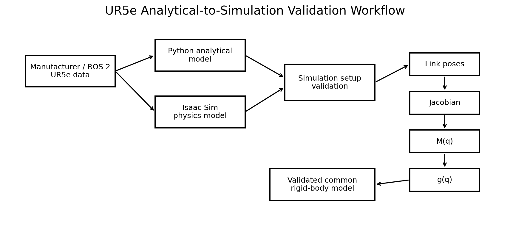
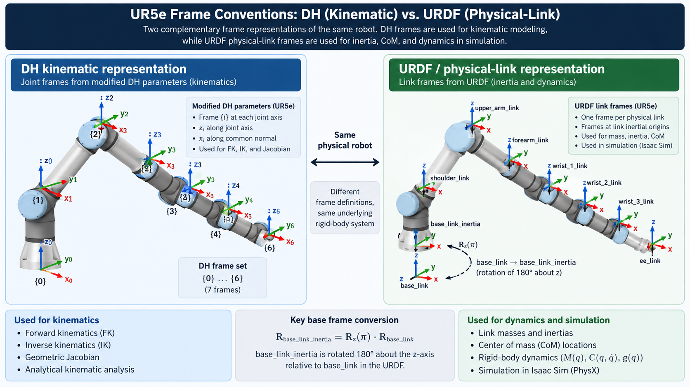
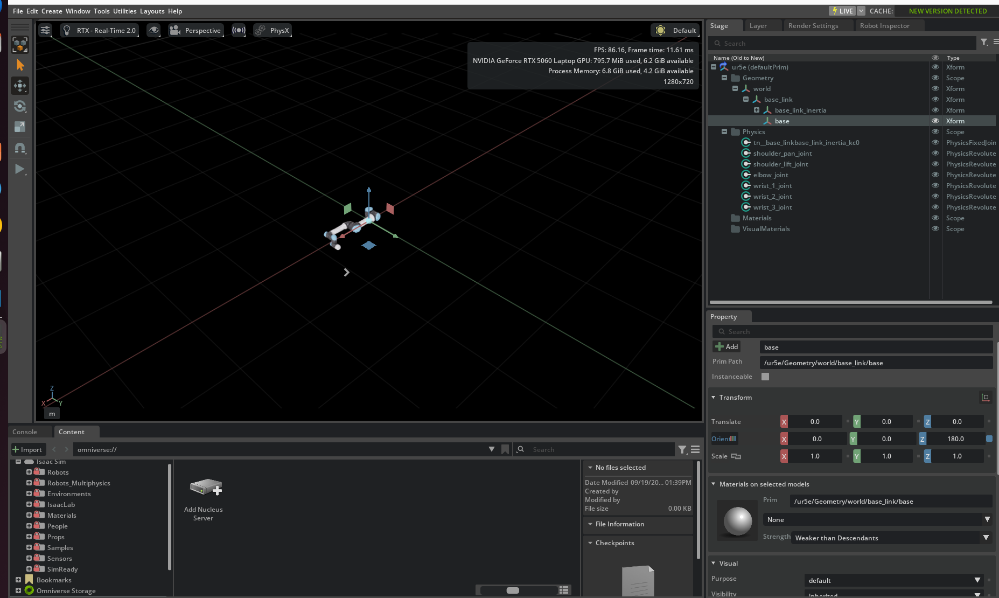
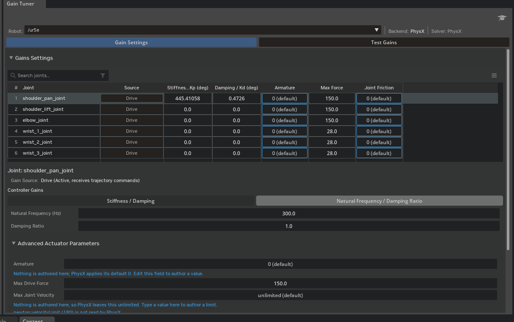
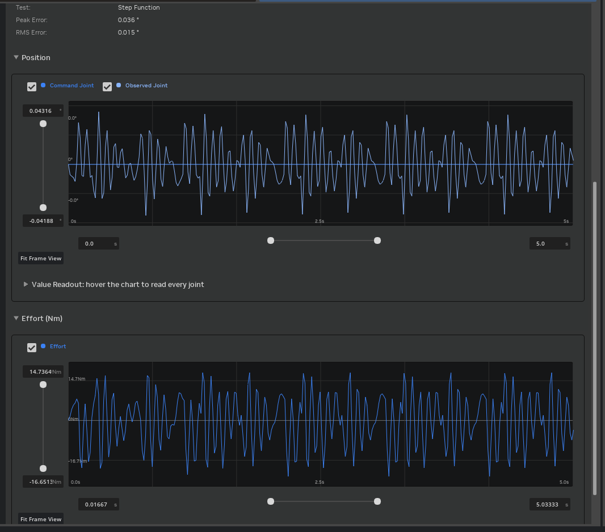
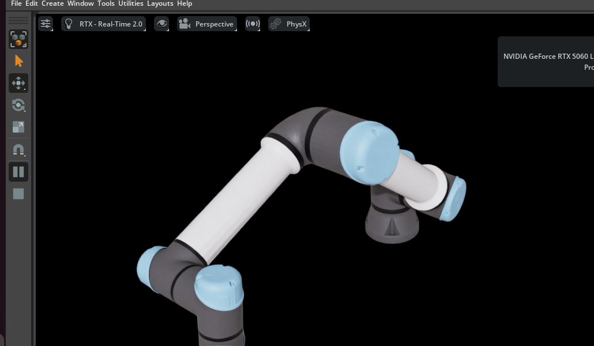
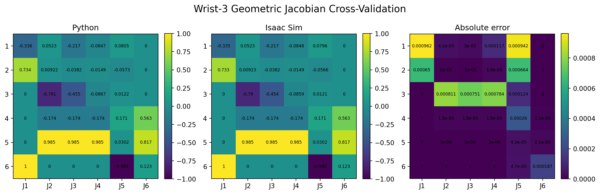
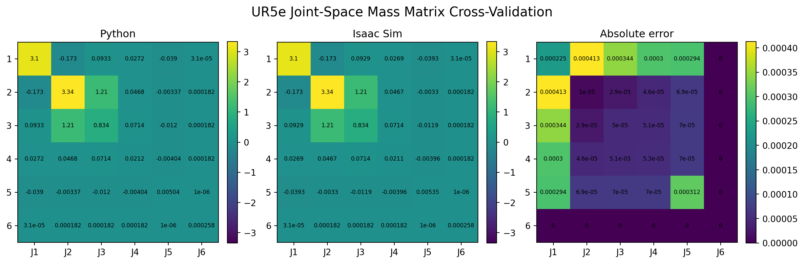
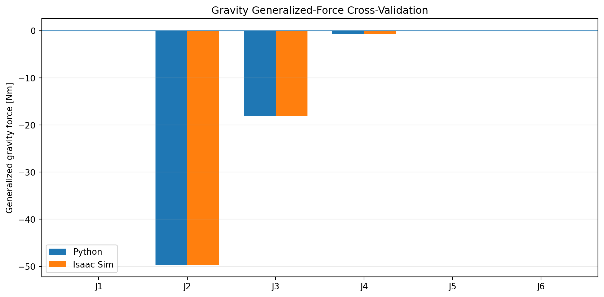
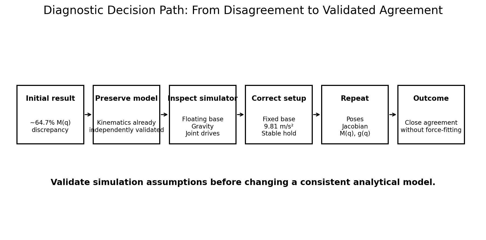

Control Systems · Pre-Part 1
UR5e Model Setup & Cross-Validation
Before designing a controller, I established that the analytical Python model and NVIDIA Isaac Sim represented the same nominal UR5e rigid-body system. The work reconciles kinematic and physical-link frames, validates the simulation boundary conditions, and cross-checks link poses, Jacobians, the joint-space mass matrix, and gravity generalized forces.

1. Why Validate the Model Before Control Design?
The purpose of this phase was not simply to import a UR5e into a simulator. Controller performance is meaningful only when the plant model is sufficiently well defined. Two implementations can describe the same robot while using different intermediate frames, inertia representations, base conditions, or actuator assumptions. If those differences are ignored, a controller can appear to perform well while compensating for a modeling inconsistency rather than the intended robot dynamics.
I assumed that the nominal manufacturer and official ROS 2 descriptions were the most appropriate reproducible starting point, but I did not assume that a Python DH model and an imported URDF would automatically share the same intermediate coordinate conventions. I expected frame definitions, importer behavior, gravity, base constraints, and joint-drive settings to be the highest-risk sources of disagreement.
For that reason, the validation order was deliberate: source parameters → physical-link transforms → joint origins and axes → Jacobian → mass matrix → gravity generalized forces. Each step validates dependencies required by the next one and reduces the diagnostic search space before higher-level dynamics are judged.
2. Nominal UR5e Reference Model
The project uses the nominal UR5e model rather than calibration parameters from a specific physical robot. Standard DH parameters are used for analytical kinematics, while the physical parameters from the official ROS 2 robot description are used for rigid-body dynamics.
| Joint | a [m] | d [m] | α [rad] |
|---|---|---|---|
| 1 | 0 | 0.1625 | +π/2 |
| 2 | -0.4250 | 0 | 0 |
| 3 | -0.3922 | 0 | 0 |
| 4 | 0 | 0.1333 | +π/2 |
| 5 | 0 | 0.0997 | -π/2 |
| 6 | 0 | 0.0996 | 0 |
| Moving Link | Mass [kg] | URDF-Aligned CoM [m] |
|---|---|---|
| Shoulder | 3.761 | [0, -0.00193, -0.02561] |
| Upper arm | 8.058 | [-0.2125, 0, 0.11336] |
| Forearm | 2.846 | [-0.2422, 0, 0.02650] |
| Wrist 1 | 1.370 | [0, -0.01634, -0.00180] |
| Wrist 2 | 1.300 | [0, 0.01634, -0.00180] |
| Wrist 3 | 0.365 | [0, 0, -0.001159] |
The six moving-link masses sum to 17.7 kg, which is intentionally not forced to equal the 20.6 kg product-level arm weight reported in the technical specification. Those values have different accounting boundaries. I considered arbitrary redistribution of the difference across the moving links less defensible than preserving the traceable physical parameters supplied with the robot description.
3. DH Frames and Physical-Link Frames
A central modeling decision was to keep two compatible representations rather than forcing one frame convention to serve every purpose. Standard DH frames are used for analytical forward/inverse kinematics and geometric reasoning. URDF-aligned physical-link frames are used for CoM and inertia propagation in rigid-body dynamics.
I initially expected the manufacturer dynamics table and ROS physical-parameter file to
contain numerically identical CoM coordinates. The apparent disagreement was diagnosed as
a frame-convention issue. Inspection of the generated description also exposed a fixed
base-frame relation equivalent to a 180° rotation about Z between
base_link and base_link_inertia. Once the physical-link chain
was expressed in the URDF convention, the link transforms agreed with Isaac Sim.

4. Isaac Sim Setup: The Simulation Is Also a Model
4.1 Fixed-Base Diagnosis
The first major warning appeared in the simulator mass matrix. A fixed six-joint industrial manipulator should produce a 6×6 joint-space mass matrix, but the imported model initially returned 12×12. I diagnosed this as evidence that the simulator was treating the robot as a floating-base system.
A manually created world-to-base fixed joint physically stopped the base, but it produced robot-schema errors in the Gain Tuner. I did not consider visual immobility sufficient: the articulation also needed to be represented consistently inside Isaac Sim. The temporary joint was removed, and the original asset structure was converted to a proper fixed-base articulation. The result was a clean six-DOF articulation and a 6×6 mass matrix.

4.2 Gravity and Joint Drives
| Physics Setting | Initial Observation | Validated Setting |
|---|---|---|
| Stage up axis | Z | Z |
| Meters per unit | 1.0 | 1.0 |
| Gravity direction | (0, 0, 0) | (0, 0, -1) |
| Gravity magnitude | -inf | 9.81 m/s² |
The coordinate system and metric scale were already appropriate, but gravity was not represented by a normal finite vector. I therefore set the simulator and analytical model to the same world gravity vector, [0, 0, -9.81] m/s².
The imported joint drives initially had zero stiffness and zero damping. Under gravity, the robot therefore moved away from the requested configuration. This was a critical comparison error: Python could be evaluated at q_target while Isaac was physically at a different q_actual. For cross-validation only, the Gain Tuner was used with a 300 Hz natural-frequency starting point and damping ratio ζ = 1.0. These gains are validation infrastructure, not identified physical UR5e servo parameters.
| Joint | Kp | Kd | Max Force |
|---|---|---|---|
| shoulder_pan | 445.41058 | 0.47260 | 150 |
| shoulder_lift | 7106.18213 | 7.53989 | 150 |
| elbow | 39952.72266 | 42.39116 | 150 |
| wrist_1 | 1209.48828 | 1.28331 | 28 |
| wrist_2 | 341.18130 | 0.36200 | 28 |
| wrist_3 | 11.75560 | 0.01247 | 28 |


5. Common Validation Configuration
All final cross-comparisons were performed at the same nonzero configuration: q = [10, -40, 60, -30, 45, 20]°. A nonzero pose was intentionally used because agreement only at q=0 could conceal sign, axis, or transform errors that disappear in a special configuration.
After the drive setup, Isaac Sim held the target at [9.999999, -39.999996, 60, -30, 45, 19.999998]°, making the analytical and simulation evaluations configuration-consistent.

6. Pose and Jacobian Cross-Validation
Physical-link positions and orientations were compared first. At the wrist-3 frame origin, Python produced [0.733548, 0.336215, 0.215589] m and Isaac Sim produced [0.733552, 0.336198, 0.215773] m, a Euclidean position difference of approximately 0.185 mm. Intermediate link positions showed similarly close agreement.
The geometric Jacobian was then compared. This is a stronger check than pose alone because it validates the propagated joint axes and differential kinematics. Representative angular columns agreed closely; for example, the J2 axis was [-0.173648, 0.984808, 0] in Python and [-0.173630, 0.984811, 0] in Isaac Sim.

7. Mass-Matrix Cross-Validation
The analytical mass matrix was assembled from the translational and rotational kinetic energy of all six moving links:
The first comparison produced an apparent relative discrepancy of approximately 64.7%. I initially suspected an inertia-frame or transformation error in the analytical dynamics because those are common failure modes. However, the analytical kinematics and Jacobian had already passed independent checks. I therefore considered modifying the mathematical model before validating the simulator to be the riskier decision.
After correcting the fixed-base representation, gravity, joint drives, and static pose, the mass matrices agreed closely. Selected entries are shown below.
| Element | Python | Isaac Sim | |Difference| |
|---|---|---|---|
| M11 | 3.103413 | 3.103188 | 0.000225 |
| M22 | 3.342034 | 3.342024 | 0.000010 |
| M23 | 1.208672 | 1.208643 | 0.000029 |
| M33 | 0.833906 | 0.833856 | 0.000050 |
| M44 | 0.021196 | 0.021143 | 0.000053 |
| M66 | 0.000258 | 0.000258 | ≈ 0 |

8. Gravity Generalized-Force Cross-Validation
The analytical gravity term was computed independently from the potential energy of the six moving-link centers of mass:
The convention is consistent with M(q)q̈ + C(q,q̇)q̇ + g(q) = τ. The simulator and Python values agreed in both magnitude and sign.
| Joint | Python [Nm] | Isaac Sim [Nm] | |Difference| [Nm] |
|---|---|---|---|
| J1 | 0.000000 | 0.000008 | 0.000008 |
| J2 | -49.685494 | -49.681679 | 0.003815 |
| J3 | -18.034631 | -18.036629 | 0.001998 |
| J4 | -0.707495 | -0.707961 | 0.000466 |
| J5 | +0.068868 | +0.068971 | 0.000103 |
| J6 | 0.000000 | 0.000000 | 0.000000 |
The largest absolute difference was 0.003815 Nm at J2, approximately 0.0077% of the Python magnitude. J1 is approximately zero because its rotation axis is aligned with gravity; the shoulder and elbow carry the dominant gravitational loading.

9. Diagnostic Lesson: Why the First Comparison Failed
The most useful result of this phase was the failed first comparison. The initial 64.7% mass-matrix discrepancy did not identify the analytical model as wrong; it identified that at least one assumption in the comparison was false.
I diagnosed the problem in layers. The 12×12 matrix exposed a floating-base interpretation. The temporary manual fixed joint exposed a schema inconsistency. The PhysicsScene exposed an invalid gravity definition. The zero-stiffness and zero-damping drives exposed a final problem: the simulator was not guaranteed to remain at the configuration used by the analytical calculation.
Several shortcuts could have produced faster numerical agreement. I could have changed the analytical inertia treatment, retained the manual base constraint because the robot looked stationary, or simply increased arbitrary gains. I considered those approaches less defensible than validating the physical assumptions first. Once the simulator represented the intended fixed manipulator and held the intended state, pose, Jacobian, M(q), and g(q) converged to close agreement without forcing the analytical model toward the original simulator output.

10. Model Boundaries
| Assumption / Boundary | Interpretation |
|---|---|
| Nominal UR5e geometry | Robot-specific factory calibration parameters are not included. |
| No payload or gripper | The validated M(q) and g(q) apply to the bare modeled manipulator. |
| Rigid links / ideal joints | Flexibility, backlash, gearbox compliance, detailed friction, and actuator dynamics are outside this phase. |
| Validation-only joint drives | The tuned Isaac gains are not physical UR5e servo identification and must not mask later controller comparisons. |
| Primary nonzero validation pose | The result provides strong consistency evidence but is not a proof over the complete workspace. |
| No contact dynamics | Grasping, collision, table contact, and object interaction are outside Pre-Part 1. |
11. Validation Result
12. Next: Part 1A and Part 1B
Part 1A — Kinematics & Dynamics Characterization
Forward/inverse kinematics, Jacobian and singularity analysis, completion of nonlinear joint-space dynamics, configuration-dependent behavior, linearization, eigenstructure, and transient response.
Part 1B — Controller Design & Tuning
PID, computed-torque control, LQR, and MPC with quantitative comparison of convergence, overshoot, settling time, RMSE, control effort, computation cost, constraint handling, and tuning sensitivity.
13. Technical Report
Pre-Part 1 Technical Report
The full report documents the parameter sources, modeling assumptions, frame reconciliation, simulation diagnostics, numerical cross-validation, engineering reasoning, and model boundaries in greater detail.
Project by Sooyong Kim · Robotics Control Portfolio